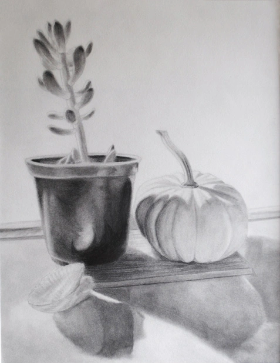

Hey there! Explore the creative work I have produced through a variety of mediums. Check out the bottom to see my animation projects!
Go, Fish | 2025
Moon View | 2024
Fish in Pond | 2025
Pixelgirl | 2026
Keroppi! | 2026
Julie | 2026
Pegasus Earrings | 2025
Dreamy Star Earrings | 2025
Green Necklace | 2025
Blue City | 2025
Dragons | 2024
Butterfly Wings for T-shirt | 2025
Keroppi Still Life | 2025
Scene from Scaredy Cat! | 2023
Scene from Scaredy Cat! | 2023
Scaredy Cat! Title Card | 2023
Photograph of URBN Center | 2023
Photography showcasing scale | 2022
Photography Showing Geometric Form | 2022
Rotoscope of My Sister | 2022
Rotoscope of Tree | 2022
1 Like 2 | 2023
Plush Monsters | 2021
Applying Illustrated Motifs to a Building | 2022
Observational Drawing of My Sister | 2021
Self Reflection, Mixed Media | 2021

Still Life and Observational Drawing | 2021
Portrait of my Dad as a Student! | 2020
Using Photoshop to Apply Patterns | 2023
Motion Design
Ad for Local Nonprofit Le Cat Cafe (2023)
SEPTA Spanish Advertisement (2023)
Sound Design
Big Hero 6 Trailer (2023)
SFX Work (2023)
View my Animations!
Below are the animation finals I have made in college.
City Life (2022)
City Life is a black and white rotoscope animation exploring weighted, curvilinear and rectilinear lines. For my Design I for Media final, I wanted to reflect on the past year living in the city for college. Animating on Procreate for the first time was challenging but exciting in its own right!
Scaredy Cat! (2023)
Scaredy Cat! is a full color Procreate animation exploring complementary colors, saturation and vibrancy. I knew more coming in about animating on Procreate but this time I was challenged to make my own characters!